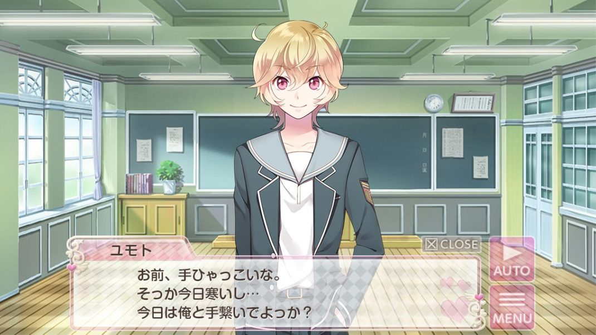
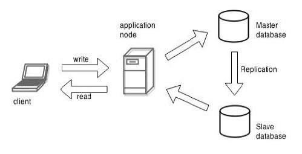

<div id="ajax-page" class="ajax-page-content">
    <div class="ajax-page-wrapper">
        <div class="ajax-page-nav">
            <div class="nav-item ajax-page-prev-next">
                <a class="ajax-page-load" href="portfolio-3.html"><i class="lnr lnr-chevron-left"></i></a>
                <a class="ajax-page-load" href="portfolio-2.html"><i class="lnr lnr-chevron-right"></i></a>
            </div>
            <div class="nav-item ajax-page-close-button">
                <a id="ajax-page-close-button" href="#"><i class="lnr lnr-cross"></i></a>
            </div>
        </div>

        <div class="ajax-page-title">
            <h1>Portfolio Project: SAMS Box</h1>
        </div>

        <div class="row portfolio-block">
                <div class="owl-carousel portfolio-page-carousel">
                    <div class="item">
                        
                    </div>
                    <div class="item">
                        
                    </div>
                </div>

                <script type="text/javascript">
                    jQuery(document).ready(function($){
                        $('.portfolio-page-carousel').imagesLoaded(function(){
                            $('.portfolio-page-carousel').owlCarousel({
                                smartSpeed:1200,
                                items: 1,
                                loop: true,
                                dots: true,
                                nav: true,
                                navText: false,
                                margin: 10,
                                autoHeight:true
                            });
                        });
                    });
                </script>
        </div>
        <div class="row portfolio-block">
            <!-- Project Description -->
            <div class="project-description">
                <div class="block-title">
                    <h3>Description</h3>
                </div>
                <ul class="project-general-info">
                    <li><p><i class="fa fa-user"></i> Mr. Kurozawa</p></li>
                    <li><p><i class="fa fa-building"></i> <a href="https://splus-software.com.vn/" target="_blank">SPLUS Software</a></p></li>
                </ul>

                <p class="text-justify">SAMS Box was a CMS designed for managing game assets, featuring a Master-Slave module and multi-user permissions. The game was intended for use in foreign language education programs in Japan.</p>
                <p class="text-justify">Technically, the project was developed with React TypeScript for the frontend and Node.js for the backend, utilizing Ubuntu to implement the Master-Slave architecture.</p>
                <p class="text-justify">I served as both a Business Analyst and Project Manager Assistant, with key responsibilities including:</p>
                <ul class="project-general-info">
                <li><p class="text-justify"><i class="fa fa-comment"></i>Translating the customer's ideas—originally presented without any technical documentation—into a structured system design. I created the initial UI design for the entire platform using Figma.</p></li>
                <li><p class="text-justify"><i class="fa fa-language"></i>Acting as the bridge between the customer and the development team, translating between Japanese and Vietnamese while also facilitating communication between technical and non-technical stakeholders. The team didn’t speak Japanese, and the customer had no technical background.</p></li>
                <li><p class="text-justify"><i class="fa fa-clipboard-check"></i>Assisting the project manager in creating the WBS, Gantt charts, and ensuring developers met deadlines in an Agile development environment.</p></li>
                <li><p class="text-justify"><i class="fa fa-file"></i>Developing technical documentation for the project, along with user guidance materials.</p></li>
                </ul>
                <p class="text-justify">Through this project, I strengthened my skills in project coordination, bridging communication gaps between technical and non-technical teams, and maintaining workflow efficiency within an Agile methodology.</p>
                <!-- /Project Description -->

                <!-- Technology -->
                <div class="tags-block">
                    <div class="block-title">
                        <h3>Skills</h3>
                    </div>
                    <ul class="tags">
                        <li><a>Business Analysis</a></li>
                        <li><a>Project Management</a></li>
                        <li><a>Technical Assist</a></li>
                        <li><a>Documentation</a></li>
                        <li><a>Project Coordination</a></li>
                        <li><a>Figma</a></li>
                    </ul>
                </div>
                <!-- /Technology -->
            </div>
            <!-- Project Description -->
        </div>
    </div>
</div>
